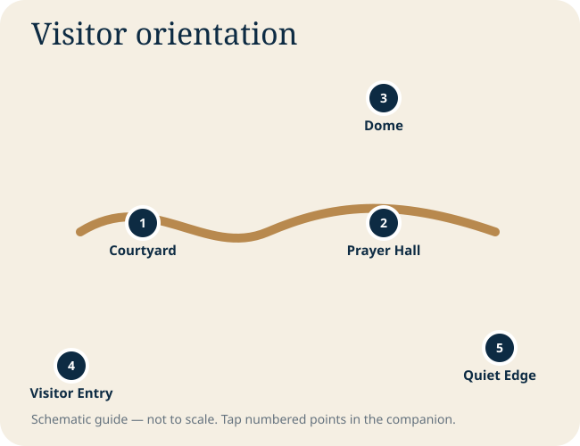

Istanbul chapters
Field guide
Approach it in three acts
Read the cascading domes and six minarets from a distance before the building fills your field of vision.
Use the arcade as a frame. The courtyard clarifies the mosque’s symmetry and transition from city to sacred space.
Allow your eyes to adjust; then follow the tile color, window light and dome pattern upward.
Move away from the central visitor cluster and study the interior from the side without blocking circulation.
Visitor and prayer guidance
The mosque remains an active place of worship. Non-worshipper access may pause around prayer periods, and local instructions take precedence over any fixed schedule in the companion.
Photography positions
- Between Hagia Sophia and the mosque for the classic paired-city composition
- Courtyard corner for repeating arches and domes
- Low viewpoint for the dome cascade
- Side edge of the prayer hall for depth without obstructing worshippers
Tap to explore the visitor sequence
Tap a numbered point for its label. Tap the expand button for a full-screen pan-and-zoom view.

Visual gallery
Photography is sourced and credited on the Photo Credits page. Operational access, prayer arrangements and ticket procedures can change; confirm locally.